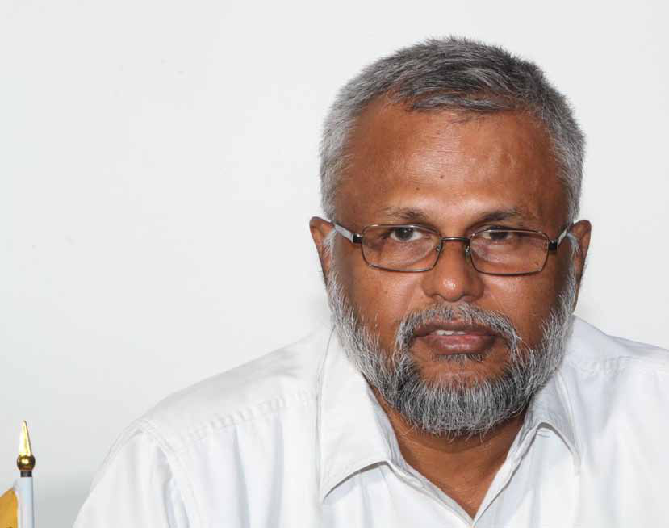
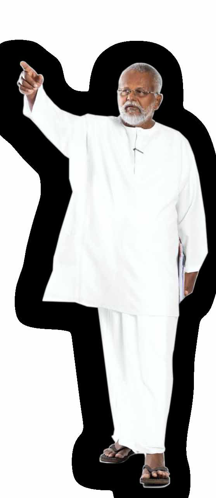
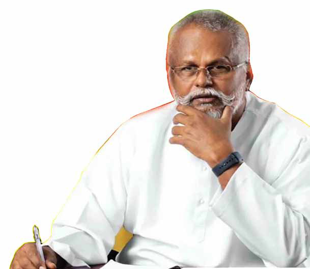

Prabhakaran Was a Big-Time Loser When It Came to Targeting Me: Douglas Devananda Part-2
Prabhakaran Was a Big-Time Loser When It Came to Targeting Me: Douglas Devananda Part-2
Jaffna Monitor hellojaffnamonitor@gmail.com 35 interview Prabhakaran Was a Big-Time Loser When It Came to Targeting Me: Douglas Devananda Part-2 BY: Our Reporter How would you address the political parties and Tamil leaders who continue to align themselves with the ideology of the Tigers in today's context? The ideology of the Tigers, that of their leader Prabhakaran, is not only defeated but also outdated. Those who claim to adhere to it now are simply engaging in opportunistic, vote-grabbing politics. A prime example of this is the Tamil National People's Front (TNPF). Its MP, Gajendran, used to grandstand in Parliament, even throwing books and files at me during the height of the Tigers' influence. Yet, in person, he would act in a completely subdued manner.

Jaffna Monitor hellojaffnamonitor@gmail.com 36 At one point in Parliament, he made the provocative statement that 40,000 coffins should be prepared because the LTTE would eliminate that many Sinhala soldiers in the North. This caused significant anger among the people and politicians in southern Sri Lanka. However, despite all this bravado, what did Gajendran do during the final stages of the war? He fled abroad, got married, and after the conflict ended, brokered a deal with Gotabaya Rajapaksa, the then Defence Secretary, to return to Sri Lanka. He even managed to secure the release of his brother, who had been detained by the Sri Lankan government. This sums up the true nature of politicians who claim to follow the Tigers' ideology. They use it as a convenient facade while pursuing personal gains. We didn't choose that path, did we? To the parties and politicians who proudly thump their chests, claiming to follow the LTTE and its leader's ideology, I would like to remind them that this mindless, violent ideology dragged thousands of innocent Tamils to Mullivaikal and was the primary cause of our people's suffering. If you continue to cling to it, you will one day be defeated not by external forces but by our own people. While other Tamil leaders, especially those from militant groups, either fled abroad in fear of Prabhakaran or surrendered and became mere mouthpieces of the LTTE, what gave you the courage to stand against him? I saw Prabhakaran as a poisonous entity— like a venomous insect whose very presence was harmful to everyone around him. I truly believed the world would be better off without him. However, I held no personal grudge against the ordinary Tiger fighters; they were merely misled. My conviction only grew stronger as I watched Prabhakaran kill many of my close relatives, comrades, friends and associates, which further solidified my determination to stay in this country and oppose his destructive policies. The Tigers had a reputation for eliminating anyone who stood in their way. LTTE sources we've spoken to mentioned that, while Prabhakaran tried to have you killed, his inability to do so eventually earned you a grudging respect from him. A writer even remarked that Prabhakaran's biggest failure was Douglas Devananda. So, how did Prabhakaran fail to get you? And how did you manage to escape his grasp? I was absolutely convinced that Prabhakaran couldn't kill me—nor would I ever die by his hands. This wasn't just blind faith; I took every precaution to protect myself. I knew, without a shred of doubt, that I couldn't trust Prabhakaran or his Tigers—not even 0.0001%. That's why I'm still alive today. There's a Tamil saying, 'Only a snake knows another snake's legs,' and I had a deep understanding of how Prabhakaran operated—his mindset, his tactics. I could anticipate his every move, which always kept me one step ahead. For example, I developed the habit of sleeping while remaining alert to the faintest vibrations in the ground, aware that the LTTE could be tunnelling beneath me at any moment. Constantly changing my location also made it nearly impossible for them to target me. When I lived on Park Road in Colombo, we set
Jaffna Monitor hellojaffnamonitor@gmail.com 37 up security sentries around the house. At that time, some members of my party, including Chandrakumar, suggested that since we had embraced the democratic path, such security measures were no longer necessary. However, my goal wasn't to prepare for an attack but to ensure that the Tigers knew we were always on high alert. This would make them think twice before attempting anything. Without these precautions, we would only realize they were upon us when it was too late. Let me give you another example. Around this time, false rumours were spread by Chandrika Bandaranaike Kumaratunga and others, claiming that we were armed hitmen for Premadasa, plotting to assassinate her and her mother. These baseless accusations created immense pressure, forcing us to leave Park Road. Unable to possess weapons for self-defense in Colombo, we had to surrender the few firearms we had. We then moved to Trincomalee with plans to head to the Jaffna islands. While waiting for a ship, we received the news that Premadasa had been assassinated by the Tigers. After that, we returned to Colombo. I was convinced that I needed to stay in the capital and establish a base there, as I believed it would allow me to better address the issues and concerns of the Tamil people. We came back to Colombo and ended up staying covertly in a house in Havelock Town. This time, there were no sentries or security systems in place. That's when the Tigers launched their first commando attack in Colombo. Without any sensors or early warnings, we only realized the attack was happening when they were at our doorstep. Tragically, four of my comrades lost their lives in that attack. However, thanks to the precautions I had taken, eight of us,

Jaffna Monitor hellojaffnamonitor@gmail.com 38 including myself, managed to escape. Despite the sophisticated weaponry the LTTE used in the assault, we survived. Had we maintained the level of security we had on Park Road, such an attack might have been thwarted. How did the LTTE manage to carry out such a bold attack in the heart of Colombo—especially their first commando operation in the capital? Military commanders we've spoken to have said that escaping an attack of that magnitude was nearly impossible. So, how did the attack unfold, and how did you manage to escape unharmed? The Tigers used someone I knew personally to gather intelligence for that attack. He was from Ariyalai, Jaffna—someone I had known for a long time. Back when my father worked for the Petroleum Corporation, this man used to sell kerosene door-to-door with a small cart. He came to my home in Colombo and, during that visit, passed on precise details about the house—both the interior and exterior—to the LTTE. Later, he returned, showed me the scars on his back, and apologized. He explained that the Tigers had brutally tortured him and forced him into betraying me. I typically met people in a small room downstairs in the house, and the informant had told the Tigers that this was where I stayed. So, they specifically targeted that room with grenades, bullets, and rocket launchers, believing I would be there. However, what they didn't know was that I never stayed there. Wherever I stayed, I always had a secret escape route, regardless of the location. While the Tigers were attacking, bombarding the building with bullets and grenades, my comrades and I managed to escape. The Tigers, however, believed they had succeeded, convinced that I had been killed. I stayed silent for a few hours, allowing the LTTE and their supporters to celebrate (he laughs), thinking they had finally eliminated me. After some time, I picked up the phone and called President Chandrika Bandaranaike Kumaratunga to inform her that I was still alive. Even she had believed I was dead until I made that call. A senior Journalist once claimed that I was calmly eating Idiyappa Kottu (or String Hopper Kottu) and drinking coffee when the surprise attack began. But in reality, I don't drink coffee or tea at all. Many writers embellish such details for dramatic effect, but the truth is quite different. At that time, for security reasons, we never ate food from outside—everything was cooked at home to ensure safety. As you asked earlier, one Saiva religious preacher even accused me of operating like a militant leader. In truth, it was my survival instinct and preparedness—much like that of a militant leader—that saved my life that day and during many other attacks. The next morning, you gave an interview to a prominent news agency, stating, 'Prabhakaran can't kill me.' Do you remember making that statement? Yes, yes. I said it because it was true— Prabhakaran tried multiple times to eliminate me. He sent two suicide bombers and even orchestrated a brutal attack on me at Kalutara Prison, but he couldn't kill me. When it came to targeting me, he was a big-time loser. Prabhakaran operated entirely from the
Jaffna Monitor hellojaffnamonitor@gmail.com 39 shadows, always hidden behind layers of bunkers and security. He never participated in battles himself, nor did he openly meet people. In fact, he wouldn't even meet his own LTTE guards without thoroughly screening and checking them first. He lived in constant fear, always shielded from danger. In contrast, ever since I chose the democratic path, I have lived openly among the people. Even during the height of the Tigers' attempts to kill me, I never went into hiding. I continued to meet hundreds of people daily, never letting fear dictate my actions. In my Jaffna office, I met thousands of people daily. Now, ask yourself: who showed more courage— Prabhakaran, who hid in bunkers and ordered bombings and killings, or me, who faced the world every day despite numerous assassination attempts, never running, never hiding? During Prabhakaran's peak, when he was revered as the "Sun God" and managed to rally the majority of Tamils behind him—whether through fear or manipulation—did you foresee his defeat? Absolutely. I always believed that Prabhakaran could be defeated, and I was certain the world would be a better place without him. My anger towards him wasn't solely because he murdered my brother, Premanandha, or killed close relatives, associates like Maheswari Velayutham, and comrades like Bala Nadaraja Iyer, among many others. It stemmed from the fact that he was the primary cause of our people's suffering. Every hardship the Tamil people endured, both past and present, could be traced back to Prabhakaran's actions. Is there a particular killing of someone close to you by Prabhakaran that deeply affected you? Each one of those murders brought me deep sorrow. There was no hierarchy in the pain they caused me. But those deaths fueled my resolve even further. They filled me with an unshakable determination to stay here, among my people, and resist Prabhakaran's fascism from within our own land. Many of my relatives and friends living abroad urged me to leave everything and join them. Some even suggested that I align myself with Prabhakaran. But I refused. I remember when Soosai, the former LTTE Sea Tiger commander, once claimed that no one could ever get close to Prabhakaran, and if they did, not even grass would grow within

Jaffna Monitor hellojaffnamonitor@gmail.com 40 a 10-kilometer radius. But look at how it all ended. Prabhakaran, who was once feared and seen as invincible, was killed like a coward in the waters of Nandikadal. I always knew this would be his fate. Recently, I visited Mullaitivu. Prabhakaran could never have imagined, even in his wildest dreams, that he would one day be killed and that I would walk freely through Mullaitivu, working to help the very people he once terrorized. What was the reason for Chandrakumar, who was once close to you, splitting off to form his own party? I had initially intended for Chandrakumar to succeed me as the leader of the party. He was intelligent and capable, and I began preparing him for that role. However, those around him began to mislead and confuse him. After the war, he became involved with pro-Tiger elements. My visits to Kilinochchi, the Tigers' stronghold, where I spoke out against the LTTE, didn't sit well with these groups. They influenced Chandrakumar, and unfortunately, he fell into their orbit. Even in the late 1990s, out of fear of the Tigers, Chandrakumar distanced himself from me and the country, taking some of my closest comrades abroad with him. When he tried to reconnect with me after the war, one of my early comrades—whom I had raised like a younger brother—returned from abroad and warned me not to trust him. He revealed that Chandrakumar had been responsible for taking him away in the first place and couldn't be relied upon. Despite this warning, I placed my trust in Chandrakumar once again, but ultimately, I was proven wrong. How were negative perceptions about you planted among a large number of people?
Jaffna Monitor hellojaffnamonitor@gmail.com 41 It was largely the result of false propaganda. The Tigers went to great lengths to portray me as a villain—depicting me as some kind of monster with horns and sharp fangs. They carefully crafted a narrative that painted me as a brutal figure. Unfortunately, many media outlets, driven by fear of the Tigers, chose to spread these falsehoods. This caused a large number of innocent people who had never even met me to believe these distorted stories and view me in a negative light. I never felt the need to aggressively counter this narrative or promote myself because I always believed my actions and principles would speak louder than any propaganda. And let's not forget that the Tamil people continued to elect me to Parliament for over 30 years. If I had truly been the kind of person the Tigers and their supporters claimed, that would have never happened. The trust of the people ultimately reveals the truth, not the false rumors spread by those with an agenda. In the recent presidential election, the candidate you supported, Ranil Wickremesinghe, was defeated. How do you view this outcome? Additionally, at the time of the first part of this interview, you were a senior member of the government and the Cabinet Minister of Fisheries. Now that you're no longer in that position, how do you feel about this change? We made a bold and strategic choice to support Ranil Wickremesinghe, keeping in mind the aspirations of the Tamil-speaking people and the broader economic challenges the country faces. While the majority of Sri Lankans opted for change, I fully respect their democratic will. At the same time, I remain optimistic that the newly elected President, Comrade Anura Kumara Dissanayake, will pursue his vision of creating a more equitable society and addressing the hopes of all citizens. As for my position as Minister of Fisheries— titles come and go, but my commitment to the people remains steadfast. Whether I hold office or not is secondary to me. I sincerely thank those who have supported our political journey. For decades, I've worked with an unwavering dedication to serving the people, always prioritizing national reconciliation and progress. Holding office doesn't define my work—it's the values and vision I stand for that matter most. What motivates you to remain involved in politics? I was among those who initiated the armed struggle, and in some ways, I feel a sense of responsibility for the current challenges my people face. I bear a moral duty to continue working for their well-being. Like other leaders, I could have surrendered to Prabhakaran, fled abroad, or simply stepped away and remained inactive in the country. But my connection to these people runs much deeper than that. I feel a profound emotional bond with them, and abandoning them in their time of need was never an option. I believe it's my responsibility to stay with them, working towards a future where their struggles are eased. Whether I hold office or not, I am driven by a deep commitment to seeing our people flourish and overcome the hardships that have plagued them for so long. The End.